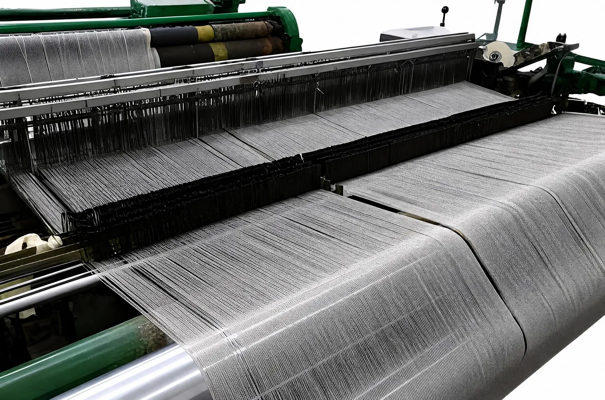

原理TECHNICAL ARTICLE
为什么金属纤维的屏蔽能力不会被洗掉

很多导电织物刚买来测得好好的，洗几次就不行了。问题不在洗涤方式，而在导电性是「镀上去的」还是「本来就有的」。
两条实现导电的路
涂层导电：在普通纤维表面镀上或涂上一层金属（银、铜、镍等）。导电层很薄，与基材之间靠附着力结合。洗涤时的揉搓、洗涤剂的化学作用、以及日常弯折磨损，都会让这层金属逐渐脱落、氧化或龟裂。导电通路一旦断开，屏蔽效能就随之衰减——而且这个衰减是不可逆的。
本体导电：纤维本身就是金属。强纶的做法是通过复合拉拔工艺，把不锈钢逐级拉拔成直径低至 2μm 的金属纤维，再捻搓纺纱，与芳纶、涤纶、PPS、棉等按比例混纺成纱线。
关键差别在这里：导电能力来自纤维本体，而不是表面的一层附加物。不存在「涂层」可以脱落，因此洗涤不会破坏导电通路。
所以洗涤要求和普通面料一样
由于导电纤维由纯金属制成、柔软而坚韧，其抗静电与电磁波屏蔽能力不会因洗涤而降低。洗涤方法与普通面料相同，可以水洗，也可以机洗。
性能从哪里来
| 特性 | 来源 | 实际表现 |
|---|---|---|
| 导电性 | 316L 不锈钢纤维本体 | 可用于静电泄放、接地搭接、中低频电磁屏蔽 |
| 屏蔽效能 | 金属纤维在织物中形成连续导电网络 | 混纺织物屏蔽率可达 99% 以上 |
| 耐洗性 | 导电来自本体而非涂层 | 反复水洗、机洗不降低屏蔽能力 |
| 柔软度 | 纤维直径低至 2μm，可纺可织 | 手感接近常规面料，可与多种纤维混纺 |
| 耐温 | 纯金属基材 | 350—850 ℃ |
混纺比例决定什么
不锈钢纤维含量越高，导电性与屏蔽效能越好，但手感会相应变硬、成本上升。实际应用中通常按用途定比例：
- 防静电工作服：只需静电泄放，较低含量即可；
- 防辐射服装、屏蔽窗帘：需要明确的屏蔽效能指标，含量相应提高；
- 通讯电缆屏蔽层：按屏蔽频段与结构要求定制。
有一点要注意
如果项目对电阻有明确的数值要求，建议先取试样实测。纤维的室温电阻会因不锈钢纤维状态而变化，需要限定时请在询价时声明，由工程师按指标反推纱线结构与混纺比例。